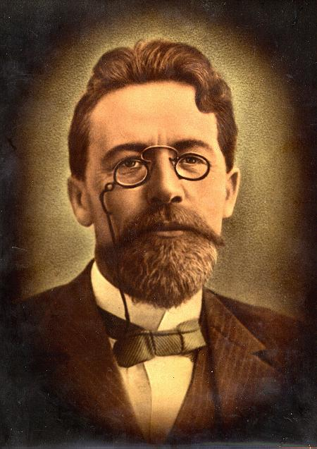
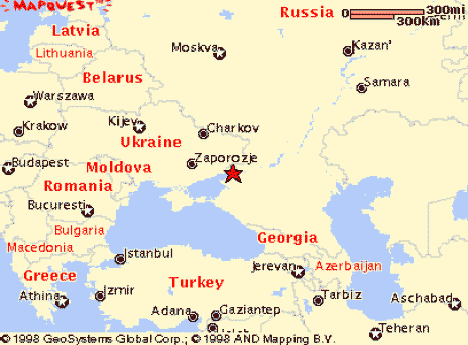

20th Century Russian Literature

1860-1904

Early Life
Anton Pavlovich Chekhov was born to poverty on January 29,1860 in Taganrog, a Russian mercantile city on the coast of the Black Sea. His mother was the daughter of a cloth merchant, his father was a grocer and his grandfather was a serf. The young Chekhov attended a school for Greek boys as well as a grammar school between the years 1867-79. Chekhov's family life during these early years reflected the political situation in Russia. The system of serfdom having been abolished only a year after Chekhov was born, the country was vastly mired in medieval conditions. Although Czar Alexander II was "determined to bring at least a ray of light into the darkness" and the use of serfs as property to be sold, gambled or used as collateral was abolished, the reality of serfs was still poverty, as they did not own the land. The hunger and oppression that accompanied poverty incited peasant revolts. Likewise, in Chekhov's household, there was much discontentment of the submissive mother and six children who was subject to harsh and oppressive patriarchal rule. Chekhov's father forced Anton and his two older brothers to toil in the shop while he went off devoting himself to personal interests. One such interest was religion -- he was somewhat of a fanatic. Chekhov's father's authoritarian rule during his childhood prompted him to later reflect: "Despotism and lies have spoiled our youth to such a degree that it is loathsome and terrible to recall it."
When he was 15 years old, his family was forced to flee Taganrog due to bankruptcy and move to the city slums of Moscow. For sometime, Chekhov remained in his hometown and supported himself through private tutoring. During this time, Chekhov greatly developed his "spiritual and intellectual formation". While he was tutoring, he also "read voraciously" and "the young Anton gradually replaced the patriarchal peasant and merchant-class values in which he had been brought up with their very opposite, the intellectual and ethical values of the liberal nineteenth-century intelligentsia" Chekhov's personal growth did not manifest itself in rebellion against his parents, for he then returned to his family in Moscow and subsequently enrolled at the Moscow University Medical School.
Chekhov the Medical Student and Early Writer
Chekhov also trained as a physician. He began practicing medicine in 1884, which was "the start of a sporadic second career which was to bring him much hard work but little income." Chekhov's motivation to be doctor was to study the human being, his body and spirit, as well as combat the human suffering that resulted in the mass arrests and deportations during the reign of Czar Alexander III. However, his humanitarian ambitions were soon accompanied by great literary success. Chekhov's experience in the field of medicine greatly influenced his perspective and character personalities in later writings. Chekhov first began writing, although for economic, not literary, purposes, while he was studying medicine at the University. Initially submitting cartoons and sketches, Chekov moved on to writing and publishing hundreds of comical short stories and several short novels, which he used to support his mother and siblings who were living nearby (his father was working and living away from the family at this time). His writings, which appeared in magazines under many different pennames, one of which was Antosha Chekhonte, were satirical in nature. Chekhov met great success in his medical student-as-writer years. His first novel, Useless Victory (1882) was a parody of "the melodramatic clichés of the popular high-society novels of the Hungarian novelist Mor Jókai, and eventually was made into two silent films. His other novel, The Shooting Party (1884) is a murder mystery that later served as the basis for one of Agatha Christie's novels and also made it into film (see a complete list of Chekhov's works at: http://danworld.net/chekhov/biblio.shtml). Regardless of the success of his early writings, of which much literary criticism has been written, the reality is that they were both "frank potboilers, hastily written for money by a bright medical student, and that no one would have ever heard of them again had they not been written by Chekhov. Chekhov's development as a writer was immense during these early years. One writing skill he acquired was the careful organization of plot and ideas, a requirement for the limitation of words imposed by magazines. Evidently, his writings during his years as a medical student were quite notable, even if he himself regarded his writing primarily as a way to earn money.
1886: The Turning Point
Chekhov became a practicing physician in 1886. He both maintained a private practice and worked at the public hospital in Moscow. Interestingly enough, Chekhov's medical practice reflected his desire to learn about and help people: "the more the income from his writing increased, the more patients he treated without charging a fee." Chekhov had finally elevated himself and his family from their poverty. All of his riches had been earned from his writings.
During this same year, Chekhov received the first validation of his talents as a writer. Grigorovich, a prominent Russian storyteller, wrote him a letter that recognized his talent. That was all Chekhov needed to restore his devotion to writing. His letter in response to Grigorovich reflects this new inspiration:
Your letter, my warmly admired bringer of glad tidings, has struck me like a thunderbolt…It is as if I were intoxicated with joy…In the five years I have been around the newspapers, I have come to accept the general view of my literary significance…Until now my literary work has been done frivolously, carelessly, and without thoughtfulness…And now, quite unexpectedly, comes your letter.
Grigorovich's acclaim for Chekhov went even further. Grigorovich introduced him to Suvorin, the publisher of Novoe vremia (New Times), a highly influential newspaper publication. During 1886 and the following year, Chekhov published 166 works. He became widely known as a literary figure, and his fame and fortune began to grow.
Chekhov the Literary Figure and the End of his Life
Despite his literary success, Chekhov remained discontented. He revealed complaints in letters of a "growing dissatisfaction with himself." In the winter of 1888, while he was working on The Steppe, Chekhov lamented, "I don't like my success. I don't like anything I am writing now…I need to be alone and have some time to myself." Chekhov's deteriorating health surely influenced his depression. Although he had been plagued with tuberculosis since he was 24 years old, he consistently refused to seek any medical help, ignoring his illness by denying it. In 1889, Chekhov wrote to Suvorin, "My soul seems to be stagnating…everything suddenly seems so uninteresting." Chekhov then embarked on an arduous 81-day journey to Sakhalin Island, a penal colony off the Pacific coast. For three months, he interviewed prisoners and collected information that would become the base of many works. In 1891, Chekhov took a break from writing when a famine spread across the country. He "spent considerable time organizing various private famine relief schemes, and then part of the summer and fall of 1892 he worked as the local medical inspector in charge of containing the cholera epidemic. Only after Chekhov completed his medial humanitarians causes did he return to writing.
After having suffered from serious health problems for several years, including hemorrhaging in the lungs, Chekhov decided to move to Yalta in 1989. In 1901, he married Olga Knipper, who influenced the characters of many of the female roles in his plays. Olga was an actress at the Moscow Art Theatre and Chekhov had to stay in the warmth of Yalta due to his precarious health; the couple lived separately, but visited each other and corresponded through letters. Chekhov commented prophetically on marriage in 1895, "I can not endure the kind of happiness that lasts from day to day. Give me a wife who, like the moon, does not appear daily on the horizon and I will marry" Then, in 1904, after having suffered from two heart attacks, he died in Germany at a spa.
A Timeline of Chekhov's Life and Works
1860 - Anton Pavlovic Chekhov is born, the son of a grocer, in
Taganrog.
1875 - Chekhov's father flees Taganrog due to bankruptcy;
Chekhov's family is kicked out of their house.
1879 - Chekhov rejoins his family in Moscow, enrolls in
University to study medicine.
1882 - Chekhov is a regular contributor to the St. Petersburg
humorous journal, Oskoki, with short stories and sketches.
1884 - Chekhov begins practicing medicine.
1887 - Chekhov is a literary success in St. Petersburg with
his first play, Ivanov.
1888 - Chekhov begins publishing his stories in the "thick
journals."
1890 - Chekhov begins to see himself as a serious writer.
- Chekhov travels across Siberia to visit and report on the penal
colony on the island of Sakhalin where he interviews the entire
population of prisoners and exiles.
1895 - Moscow Art Theatre opens. Chekhov writes The
Seagull.
1896 - The Seagull opens. It survives only five
performances after a disastrous first night.
1897 - Chekhov realizes he is suffering from advanced
consuption.
1898 - The Seagull is produced successfully by the
Moscow Art Theatre.
1899 - Uncle Vanya is produced successfully by the
Moscow Art Theatre.
1901 - Three Sisters is produced to poor reviews. -
Chekhov marries actress Olga Knipper.
1904 - The Cherry Orchard, Chekhov's last play, is
produced.
1904 - After two heart attacks, Chekhov dies in a hotel
bedroom in the German spa of Baden weiler at the age of 44
See short summaries of his major works at: http://mchip00.med.nyu.edu/lit-med/lit-med-db/webdocs/webauthors/chekhov68-au-.html
Interesting Quotes
"You must trust and believe in people or life becomes impossible."
"The university brings out all abilities including incapability."
"One must be a god to be able to tell successes from failures without making a mistake."
"If you are afraid of loneliness, don't marry.""Any idiot can face a crisis, it is this day-to-day living that wears you out."
Moscow Art Theatre
"The Moscow Art Theater is a Russian repertory company founded in 1897 by Constantin Stanislavsky and Vladimir Nemirovich-Danchenko. Its work created new concepts of theatrical production and marked the beginning of modern theater. Rebelling against the highly stylized theater of the 19th cent., the founders set out to create instead a true ensemble theater based on a realistic method of acting and production. Their productions of Chekhov's plays, especially suitable to the company's subtle and intense style, brought fame to both Chekhov and the theater. Other memorable productions were Tolstoy's Czar Fyodor Ivanovitch, Dostoyevsky's Brothers Karamazov, and Gorky's Lower Depths. The company made several successful tours of the United States. It has continued its classic repertoire while reflecting in new productions the political changes within Russia over the years."
Visit the website (in Russian) at: http://art.theatre.ru/
Literary Style
Chekov's literary works concern "human folly, the tragedy of trivialities, and the oppression of banality." In his plays, he focuses on the character and mood rather than action in plot; his subjects are often desolate, lonely people who suffer from self-absorption and desperation. The usually is no clear conflict, and when there is, there is no clear resolution. Chekhov portrays life on stage according to his own words: "just as complicated and just as simple as…in real life. People are sitting at a table having dinner, that's all, but at the same time their happiness is being created, or their lives are being torn apart."
Check out Chekhov's Legacy at http://mockingbird.creighton.edu/NCW/chekleg.htm
Other Links to Understanding Chekhov
- See what critics say about Chekhov's literary style:
http://mockingbird.creighton.edu/NCW/chekcrit.htm
- Chekhov's House in Moscow:
http://www.russia.net/country/moscow_chm.html
- A Guide to Tanganrog:
http://lynx.dac.neu.edu/a/amakhank/taganrog/index.htm
- Russian Theatre, 1894-1905.
http://webserver.rcds.rye.ny.us/id/Theater/melissa.html

From "Taganrog Central" information website: http://lynx.dac.neu.edu/a/amakhank/taganrog/Maps/tag_map6.htm
Bibliography
Clyman, Toby. A Chekhov Companion. London: Greenwood Press, 1985.
Heim, Michael Henry (translator) and Simon Karlinsky. Anton Chekhov's Life and Thought: Selected Letters and Commentary. Berkeley: University of California Press. 1975.
Melchinger, Siegfried. Anton Chekhov. New York: Frederick Ungar Publishing Co, 1972.